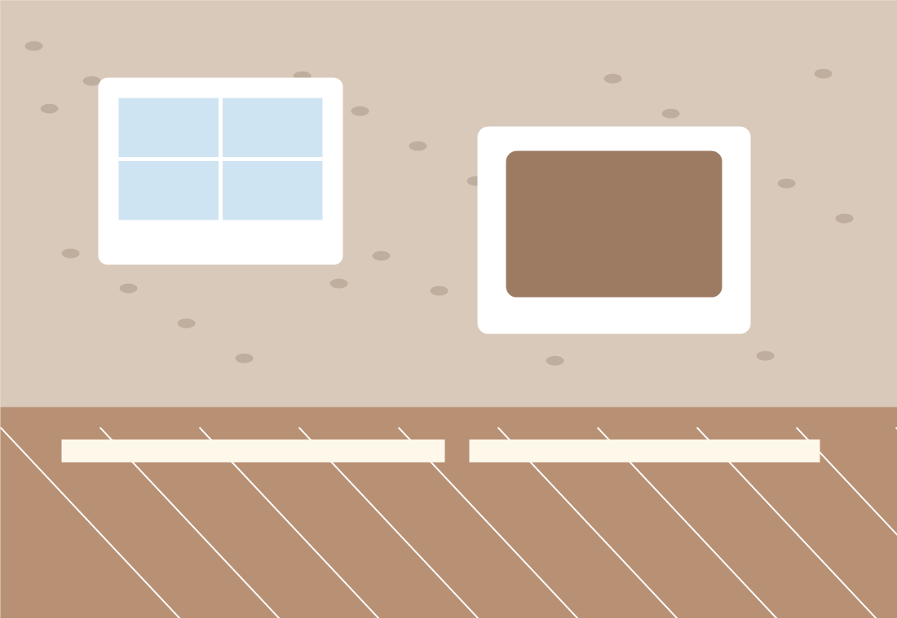
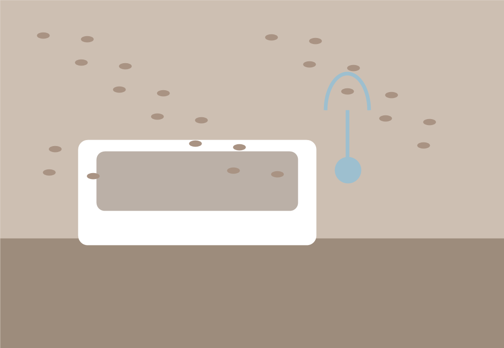
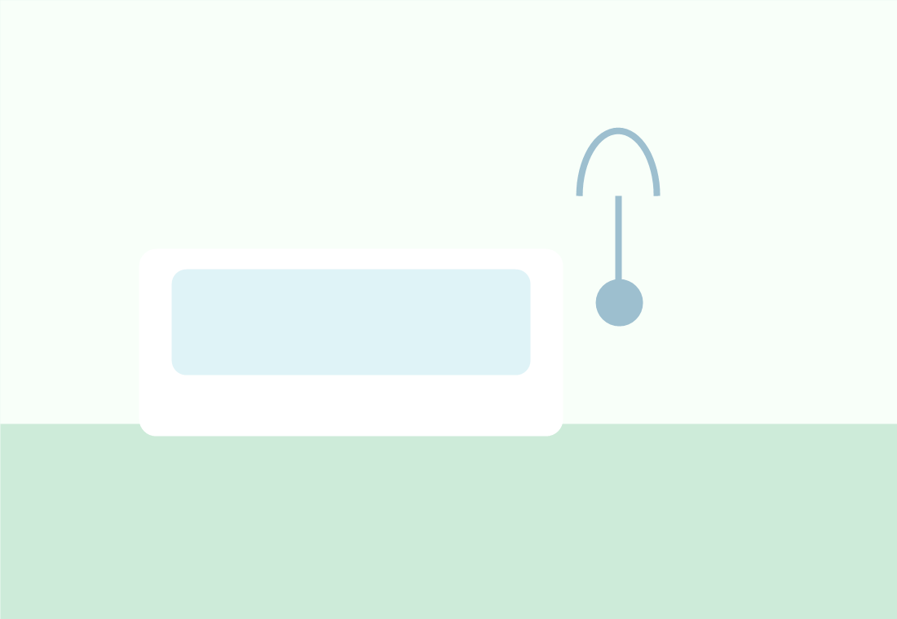
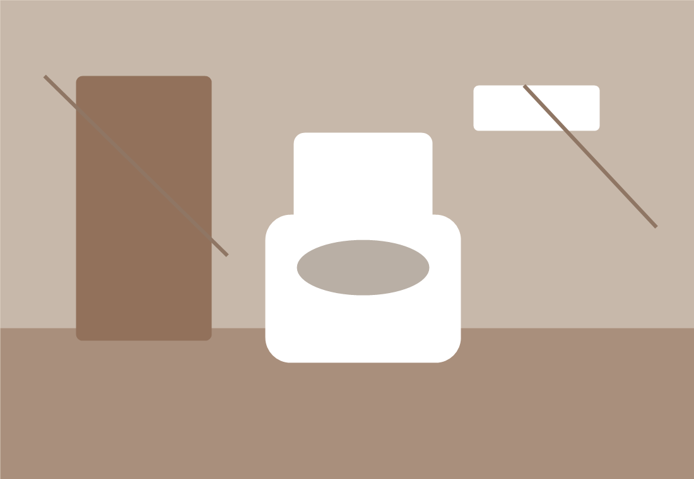
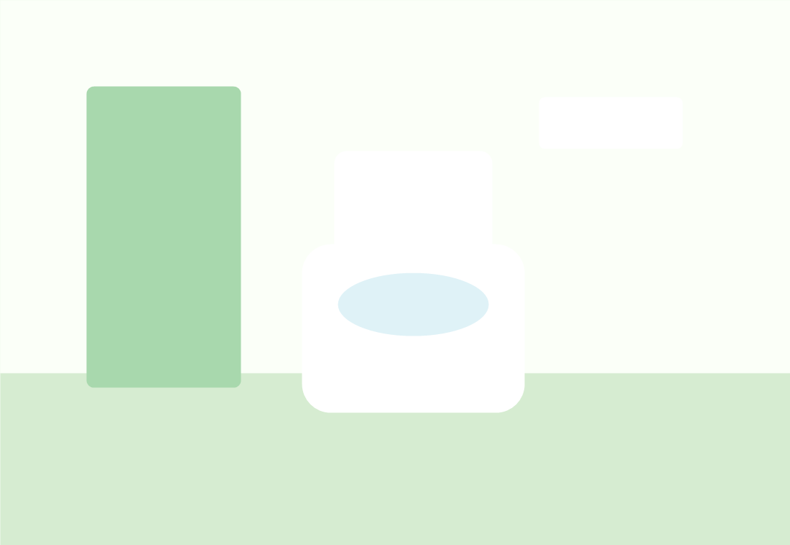
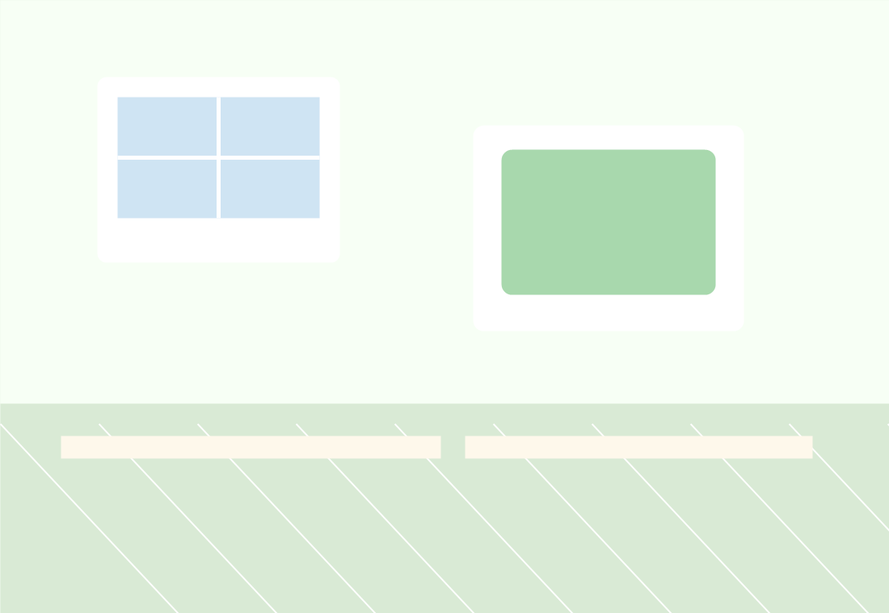

ワンルーム壁紙張替え
くすみのある壁紙を淡い白系へ。部屋全体が広く明るく見える仕上がり。
Works
ビフォーアフターをたくさん並べられるよう、カード型で追加しやすい構成にしています。

くすみのある壁紙を淡い白系へ。部屋全体が広く明るく見える仕上がり。


汚れや古さが目立つ浴室を、清潔感のある明るい空間へ。


床・壁・便器まわりを短工期で整え、毎日使いやすい空間に。


次の入居準備に向けて、部屋全体の印象をすっきり整えます。
部分的な張替えでも印象を変えたい物件向けのサンプル事例。
交換が必要な箇所と使える箇所を見極め、無駄の少ない施工へ。